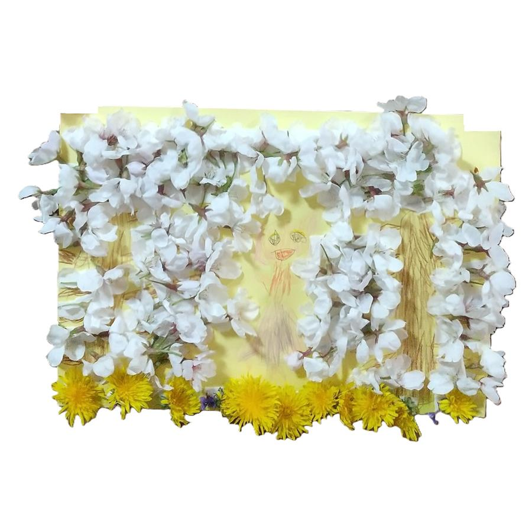
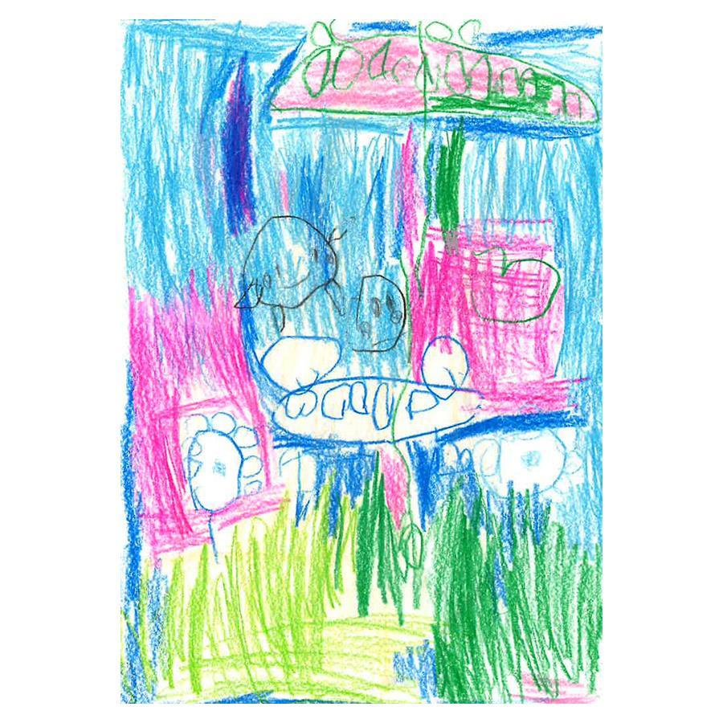
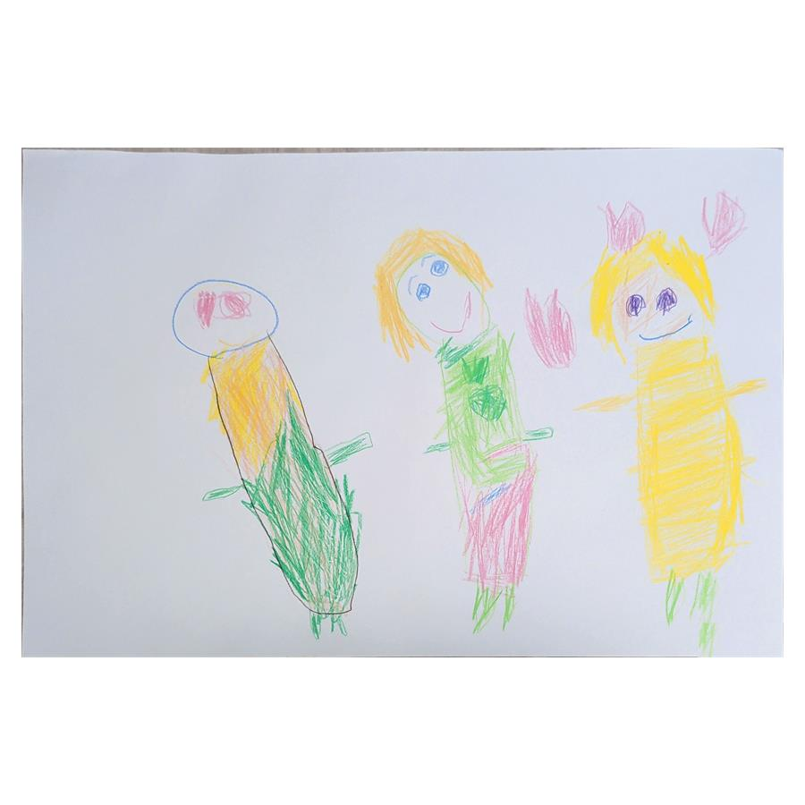

AI × Personal Assistant
生活支援AI「Sebas」の設計
OpenClawを基盤に、生活・学習・発信を支えるAIアシスタントを構築。安全ルールや記憶、役割分担を整えながら育てています。
AIツールとクリエイティブワークフローを
日々、実験しています。
生成AIを使った画像・動画・アプリ制作から、プレゼン資料の自動化まで、 さまざまな実験を繰り返しながら、AIとクリエイティブの可能性を探っています。
小さな実験を積み重ねて、面白いものをつくることが好きです。
子どもの自由な発想と、AIの表現を
ゆるやかにつないでいます。
このサイトに登場するイラストは、娘たちが描いた絵を元にしています。
そのままの線や形の面白さを大切にしながら、
AIの力も少し借りて、自分なりの表現としてかたちにしています。
整いすぎたものではなく、 日常の中にある自由さや偶然のかわいさを残したまま、 クリエイティブに落とし込むことを大切にしています。



OpenClawを基盤に、生活・学習・発信を支えるAIアシスタントを構築。安全ルールや記憶、役割分担を整えながら育てています。
日々の気づきから投稿文案を作り、選んだ案だけをTypefullyの下書きへ送る半自動フロー。人の確認を残し、安全性と効率を両立しました。
子どもの自由な絵をモチーフにした個人ポートフォリオ。素材整理や公開範囲を確認しながら、HTMLとCSSで制作しています。
AIアシスタントの構築状況を見える化する進捗ページ。内部情報を分離し、公開できる内容だけをまとめています。